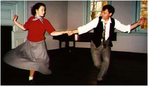

American dances
American dances tend to be energetic and dynamic, just like American culture in general.
Lindy Hop was founded in the African-American community of the 1920s. Sociologist Katrina Hazzard-Donald notes that African-American influences are readily observable, in particularly the style of leg movements and the establishment of a "perimeter of dance".
The